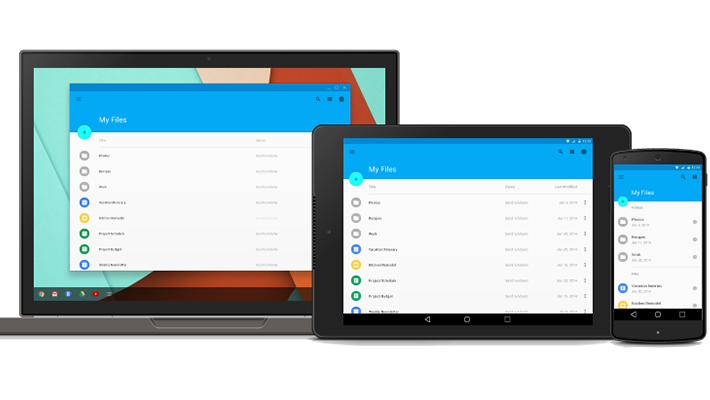

<!-- About Hackathon Section -->
<section id="about-hackathon" class="about-hackathon">
    <div class="content-wrapper">
        <div class="col-md-8 col-md-offset-2">
            <div class="hackathon-row float-left col-md-12">
                <div class="hackathon-img-wrapper animated hiding" data-animation="fadeInLeft" data-delay="0">
                    
                </div>
                <div class="hackathon-details animated hiding" data-animation="fadeInRight" data-delay="0">
                    <h4>Android Wear</h4>
                    <p>
                        The front doors will be locked because this is after hours, please park behind the building and come to the door nearest the parking lot.<br><br>
                        Our last meeting showed that there was a lot of interest in Android Wear so we decided to put on an Android Wear Hackathon to see what you could come up with! We realize that this is pretty short notice so we hope you can help us spread the word! There will be pizza, prizes and a great group of geeks to spend the evening coding with! Even if you don't have an app idea come on in and lend a hand to someone else or maybe find inspiration once you're here!
                    </p>
                </div>
            </div>
            <div class="hackathon-row float-right col-md-12">
                <div class="hackathon-img-wrapper animated hiding" data-animation="fadeInRight" data-delay="0">
                    
                </div>
                <div class="hackathon-details animated hiding" data-animation="fadeInLeft" data-delay="0">
                    <h4>Google Glass</h4>
                    <p>
                        We love wearable computing especially Google Glass for which we want to gather the break up community in order to boost innovation.<br><br>
                        Coding an app on Google Glass needs its Rockstar Dev : the team needs a fast learner with solid skills on Android. He knows his way around Android SDK, already checked the Glass Developement Kit (GDK) quick start guide allowing him to jump start developing an app for Glass.The Designer has the hard task to build the visual identity from the ground up, he has strong UX knowledge and a deep understanding of the new rules set by the Glass. His design skills give him the credibility to decide the most effective UI and the most compelling Glass experience.
                    </p>
                </div>
            </div>
            <div class="hackathon-row float-left col-md-12">
                <div class="hackathon-img-wrapper animated hiding" data-animation="fadeInLeft" data-delay="0">
                    
                </div>
                <div class="hackathon-details animated hiding" data-animation="fadeInRight" data-delay="0">
                    <h4>Polymer</h4>
                    <p>
                        Polymer is a library that introduces web components. Web components are small elements on a page that can be extended and incorporated in web applications. The result is an increase in productivity.<br><br>
                        We used Polymer mainly to explore the concept of web components. The transition of Google to material design was also a factor.
                        While the library was never touched by the team, it still was painless to wireframe the application. Later on we incorporated some Polymer components in the design. We didn’t use the full potential of Polymer because of the limited time.
                    </p>
                </div>
            </div>
        </div>
    </div>
</section>
<!-- End About Hackathon Section -->
